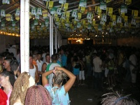
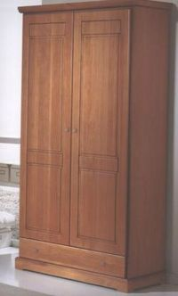
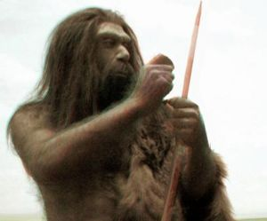
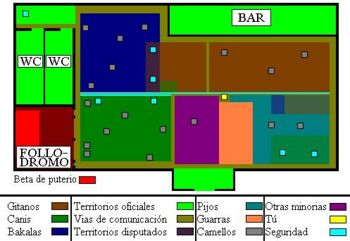
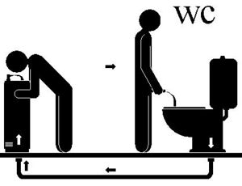
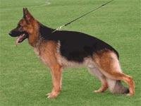
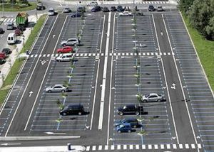

Discoteca
 De: La Frikipedia, la enciclopedia extremadamente seria.
De: La Frikipedia, la enciclopedia extremadamente seria.
| De la serie Lugares y sitios:
|
| Discoteca
|
| 
|
| Discoteca improvisada o caseta de feria. Si quieres ser como Beethoven o Velázquez, no acudas a uno de estos sitios.
|
|
| Sector de actividad
|
Distribución de sustancias tóxicas.
|
| Público objetivo
|
Canis, pijos y otras tribus molestas.
|
| Localizado en
|
Ciudades o pueblos, a menor número de habitantes, mayor cutrez en general.
|
| Regentado por
|
Gente que se cree muy cool.
|
| Nombres típicos
|
Dogo's, Maná, Fever, Chocolate, etc.
|
| Decoración habitual
|
Luces de colores, humo de porro, etc.
|
| Actividades comunes
|
ligar, etc.
|
| ¿Es rentable?
|
Mucho.
|
| Nunca verás aquí...
|
A un Beethoven o a un Velázquez.
|
| Nivel de frikismo
|
Nulo.
|
Las discotecas son las culpables de que todos los sábados, tú con toda la ilusión del mundo te arregles con tu vestimenta más cara y elegante, te perfumes con un embriagador y atractivo olor y te hagas un peinado escultórico digno del escultor griego Praxiteles, en conclusión es la culpable de que te conviertas en el paradigma de la elegancia, la belleza y el saber estar. Todo ello para acudir a un recinto maloliente donde tendrás que:
- Escuchar unos ruidos atronadores, desagradables e incoherentes a los que llaman reggaetón o antónimo de la buena música y civilización.
- Beber unos brebajes a los que llaman alcohol, contaminar tu cuerpo voluntariamente con otras sustancias como pastillas y porros e involuntariamente con humo y esa hipotética droga que alguien echan en tu vaso cuando apartas la mirada, según la versión de algunos padres (la verdad es que algunos yonkis todavía están buscando a esa persona que regala droga con el fin de hacer negocios).
- Soportar las “gracias” de las más detestables tribus urbanas organizadas en manadas, entre las que se encuentran canis, los bakalas, los kinkilleros, los gitanos, los pijos, Kimi Raikkonen, Guti etc.
- Pagar voluntariamente un dineral por todo esto y por destruir tus neuronas, tu futuro y tu personalidad.
Entrada
 Típico portero de discoteca camuflado en tu habitación
Cliente asiduo a las dicotecas en el cenit de su excitación discotequera. Con ello ha conseguido un perpetuo olor a Cacique, una dieta a base de pastillas y la perdida integra de todas sus neuronas.
Lo primero que te encuentras al llegar a estos recintos, es una fachada decorada por un sucedáneo de la imitación de una copia, de una reproducción del símil de un intento de artista, el cual creyéndose Velázquez ha pintado un graffiti sobre la pared representando planetas y estrellas, decorado todo con brillos y sombras cutres (un cani con el Paint sería capaz de hacer algo mejor). A lo sumo un dibujo que mezcla el cubismo con motivos canis. Las fachadas más elaboradas, intentan imitar la arquitectura de civilizaciones antiguas o futuristas, usan juegos de palabras o simplemente intentan pasar desapercibidas, pero aunque la idea es buena el resultado sigue siendo pésimo.
Una vez deslumbrado por este "arte" te enfrentaras a la segunda prueba, que es la versión española de esa escena clásica de las películas americanas, donde un líder elige de entre una fila a los jugadores de un equipo, y donde alguien es humillado siempre. En este caso, el líder es una especie de humano conocido como portero, gorila, matón o hijoputa. Este ser esta caracterizado por parecer el resultado de "empalmar" a dos personas, pintarlas de color caoba y ponerles tiradores dorados, es decir parecen armarios antiguos. También por usar unos mecanismos mediante los cuales selecciona a los "afortunados" que podrán entrar al local. Estos son:
- Juzgar tu vestimenta: Para calcular la cantidad de lerus que posees en el banco y, o, u, cerdo bajo tu cama: Si detecta que la renta per cápita de tu familia es inferior de lo necesario, no dudará en humillarte ante todo tu pueblo dandote una ostia para que te vayas si es necesario. Expertos en superar esta prueba son los canis (por el oro) y los pijos (por la ropa superfashion que les compran sus papas). Ciudadanos honrados de la periferia, absténganse de realizar la prueba de las colas de discotecas.
- Juzgar tu físico: Gordos de más de 120 kilos absténganse de intentar superar esta prueba, pues según los porteros consumen unos valiosos metros cuadrados en el interior de los recintos además de no venderse comidas en los mismos, resultando una pérdida de beneficios. Tias buenas, aceptadas incluso sin pagar (e incluso sin comida de cimbrel) pues son una inversión en la máquina de condones y en los cubatas que pagaran los “pagafantas”. Feas montadas en el dolar son la excepción.
- Evaluar tu nivel de frikismo: Para impedirte la entrada si este domina el 20% de tu personalidad.
- También equilibran la población cani-pija: Teniendo en cuenta que el nivel de canis debe ser tres veces inferior al de los pijos ya que de lo contrario se podría producir lo que se conoce como "holocausto pijo". Este se produce cuando un pijo discute con un cani por motivos de celos o por el simple hecho de que los canis son unos animales, este llamará a sus 300 colegas para formar la SS (Susvamos a Sangrar) y exterminar a todos los pijos del local a ostias. Si los pijos superan en cantidad numérica a los canis, la batalla puede ser evitada ya que los canis se "jiñan", al menos dentro del local pues a la salida estará esperando medio ejercito cani. Para comprender la conflictividad entre estas dos especies leer The Matrix: Cani's Revolution.
En dentro
Soportar la aglomeración, el olor a axila + puterio + porro (también conocido como sobaco de puta drogá), los toqueteos hasta el borde de la violación hacia tu novia o incluso hacia ti (+25% de gravedad cuando proceden de un truchón), las peleas entre manadas de canis o similares, las inclemencias de cuatro niñatos pijos malcriados, pagar un dineral para que el dueño un local cutre, te marque la mano con un sello como si de su ganado se tratase, etc, es solo el principio porque dentro te espera más de lo mismo e incluso peor. Por ahora el superar la prueba del portero y echarle una mirada al susodicho como diciéndole: “¿hace frio ahí afuera no hioputa?” te ha subido la moral en un 25%, buena falta te hará.
Música
 Cantante reggaetonero u "homo cantator regetonis" en su estado natural.
La “música” que predomina actualmente en estos sitios, es algo conocido como reggaetón. Una especie de mierda con ritmos repetitivos y letras triviales, vacías y llenas de machismo. Se podría catalogar como una moda pasajera y sin sentido, pero la verdad es que ya está durando demasiado y ha destrozado ha día de hoy miles de vidas y mentes brillantes, a la par que llena de sentido la vida de miles de canis y jessis, eso si. Para traer esta “música” a nuestras tierras, sus creadores deben seguir los siguientes pasos:
- Paso 1: Viajar a cualquier selva del mundo o terreno inexplorado y seguir los rastros de pinturas rupestres.
- Paso 2: En poco tiempo encontrarán una especie de simios antropomorfos u “homo cantator regetonis”. Estos estarán cerca de superficies urbanas pues suelen alimentarse de los desperdicios que en ellas se generan, además adoran a las luces de la civilización ya que creen que son deidades todopoderosas.
- Paso 3: Una vez encontrados estos animales, deben atar un filete de cerdo o pollo con un cordel y sacarlo por la ventanilla, para después ir en coche hasta un estudio de grabación. Una manada de cantantes de reggaetón seguirá el filete/coche hasta el lugar de destino.
- Paso 4: Una vez en el estudio de grabación, deben poner ante la manada reggaetonera un micrófono y a una mujer de buen ver con poca ropa encima. Acto seguido la manada reggaetonera empezará a excitarse, es decir, el cantante reggaetonero más inteligente o líder (el que sabe hacer fuego), empezará a emitir sonidos guturales, para a continuación arrancarse a cantar una mierda machista dedicada a la señorita de buen ver. El resto de la manada empezara a dar porrazos a todo el mobiliario hasta crear una serie de ritmos repetitivos que acompañaran a la canción.
- Paso 5: Tras grabar esta mierda, deben cubrir al líder de la manada con pieles y oros varios, además de rodearles de hermosas mujeres hasta el punto de que parezca un proxeneta machista y rico.
- Paso 6: Cuando el líder reggaetonero tenga pinta de chulo, deberán fotografiarle para crear la portada del arma más letal que ha conocido occidente desde la “bomba H” (en español bomba nuclear), es decir, un disco de reggaetón. A continuación se copian y distribuyen los CD’s por todo el mundo.
- Paso 7: Éxito reggaetonero conseguido (muérete de envidia Chernóbil).
Si tú quieres ser un cantante de reggaetón, solo debes estudiar a Bach, Beethoven, etc, y hacer todo lo contrario de lo que hacen ellos. Tambien deberás pensar como un simio u hombre de las cavernas y tratar a tu madre o pareja como a una mierda (machismo). A continuación podras contemplar en toda su gloria una posible canción de reggaetón:
¡Atencíon!: Leer el siguiente parrafo puede provocar vómitos, mareos o trasrornos de la erección.

|
Mamita linda y limpiadora
Eres mi vida, mi esclava
Coge la fregona y de lejia la empapas
Y limpia el váter
porque me he meado en la tapa.
|

|
| Cualquier canción de reggaetón (no es verídico...pero casi.)
|
Discotecas, reggaetón y reproducción
Incluso el reggaetón puede conseguir que este bicho folle
Recientes estudios científicos, han confirmado que las vibraciones reggaetonianas, sobreestimulan la parte más primitiva del cerebro, es decir, la que controla el "guarreo". La víctima del reggaetón recibibe un chute puntual de hormonas que aumenta sus ansias de fornicar en un 85%, confirmando así el estudio, que el reggaetón es sinonimo de follar, que está hecho por gente primitiva para primitivos y ha servido además para catalogar este “género musical” como método de reproducción asistida. Además gracias al reggaetón, la infertilidad ya no existe entre canis y jessis, un gran peligro teniendo en cuenta que sería recomendable castrar a estos ejemplares para contener su expansión demografica.
- Anécdota nº 1: Afueras de Sevilla, 24 de Julio de 1992: Un adolescente con gorra y sin graduado escolar (véase cani) paso por al lado de un poblado de chabolas gitanas justo cuando iba esuchando reggaetón a todo volumen, en su coche semirobado (no robó el coche pero si robó para pagarlo, que no es lo mismo). Nueve meses despues, la población de estas chabolas había aumentado en un 200% hasta crear un auténtico gueto (las 3000 viviendas).
- Anécdota nº 2: Andalucía, 15 de Agosto de 2005: La población de linces estaba a punto de extinguirse, hasta que el joven de antes decidió ir a Marruecos junto a su novia, para comprar "toallas" y por supuesto escuchando reggaetón para amenizar el viaje (jessi+reggaetón=Diversión asegurada). Como no sabemos cuanto dura el preñamiento de un lince (eso en Wikipedia), vamos a decir que a los pocos meses de que este joven cruzase el Sur de España, la población de linces aumentó en un 150%.
Alcohol
Dos clientes asiduos de esta parte de la discoteca
En cuanto al alcohol, digamos que te obligan a pagar el equivalente al precio de una entrada de cine, un concierto de música o el de un libro, para beber algo que probablemente ha sido preparado en la bañera del dueño del local y a lo que llaman cubata. En consecuencia este liquido estaría formado por:
- 20%: Cocacola, Fanta o similares.
- 20%: Cualquier fruta fermentada, tambien conocido como alcohol.
- 20%: Agua congelada, marca “Aguargrifoh®”, con sabor a plomo o cobre.
- 20%: Champú, ademas dependiendo del tipo de dueño del local este puede ser: “Avena Kinesia” (dueño normal), “Champu de leche de camella de la orilla izquierda del nilo” (dueño pijo), ningun champú (dueño gitano o cani).
- 20%: Sustancias corporales varias.
Hay que tener en cuenta, que los cubatas son la principal arma de los pagafantas y los feos que acuden a estos recintos para fornicar, convirtiendo a estos seres en la principal fuente de inversion de las discotecas, tras los canis y los bakalas.
Organización social
 Mapa de cualquier discoteca.
La organización que predomina dentro de las discotecas, es algo parecido a la mezcla entre la organización política y social de EEUU y la de los Balcanes:
- Territorios independientes y conflictividad social: Es decir, manadas de cada especie dominan una determinada extensión de territorio, establecen sus fronteras meando en su terreno y se abastecen de suministros organizando su propia red de camellos. Pero como "la cabra siempre tira al monte", los canis, gitanos y bakalas siempre tirarán a su condición de animales, buscando la conflictividad y la violencia mediante la invasión del territorio de otras tribus. De este modo se forman batallas masivas entre manadas de estos clanes, donde no faltan puñaladas e incluso tiros y donde siempre sales perdiendo tú y todos los pijos.
- Gobierno central e infraestructuras comunes: Aunque por encima de cada territorio se encuentran los de seguridad, que velan por una buena diplomacia entre especies, situándose en las fronteras y evitando peleas o el apareamiento descarado que conllevaría el aumento de población, además controlan el abastecimiento de alcohol y los váteres (piezas estratégicas claves).
- Vias de comunicación: Además entre la aglomeración, siempre se distribuyen una serie de vías de comunicación por donde a modo de riachuelo fluyen las personas buscando diferentes servicios. Estos riachuelos conectan los distintos territorios, la entrada con el bar, el WC y el follodromo (rico en puterio).
Mobiliario
 Recientes teorías apuntan a que este es el ciclo vital del agua en algunas discotecas cutres. ¿Prefieres ahorrarte la clavada por la botella de agua?
 Llámalo cuarto eslabón de la cadena alimenticia en las discotecas, perro lazarillo o simplemente arroz tres delicias.
Váteres
Hay una “dicotomía vateril” en cuanto a los servicios de discoteca, y esta se fundamenta en las diferencias entre el estado de los servicios para mujeres y las cavernas donde los hombres suelen ir a miccionar.
- Servicios para hombres: Antaño solían ser una bonita habitación, decorada con elegantes cerámicas y porcelanas varias. Pero años de mala puntería y poca limpieza lo han convertido en una especie de caverna recubierta por una espesa capa de mugre pegajosa y maloliente. Entre la amplia gama de olores que te puedes encontrar en estos recintos podemos destacar: olor a mierda, alcohol, tabaco, porros y a "guarreo", lo más extraño ya que nunca ha entrado en ellos una mujer (encontrarás la solución aquí). La única superficie limpia de los servicios para hombres es siempre la misma tapa o cisterna de váter, donde ciertos personajes aspiran horizontalmente y a partes iguales: mugre, restos de carnet de identidad y unos polvos blancos bastante caros (véase Pocholo o Maradona como algunos de los más eficientes limpiadores de váteres). Sobra decir que encontraras decenas de desperfectos que aumentan la cutrez del lugar en un 60%, varias feas camufladas entre la infinita cola del exterior, esperando desesperadamente para asaltar a jovenes de buen ver que vayan a miccionar y acusarles de haberlas tocado (para ver si por casualidad pueden "cazar algo"), y como no, la reglamentaria maquina expendedora de capuchones.
- Servicios para mujeres: En realidad, ningún hombre ha entrado jamás en una de estas habitaciones y los pocos datos que existen sobre ellas, los han recopilado personas que encontraron sus puertas entreabiertas. Solo sabemos que desprenden un embriagador aroma a limpio que a los hombres nos atrae y nos incita a entrar, en una actitud de metaguarreo (más allá de las ansias de fornicar). A este atractivo olor se suma la ausencia de mugre, oxido, material genético y peste. En los baños de mujeres podrás encontrar elementos que son imposibles de hallar en los váteres de hombres, por ejemplo: escobillas blancas, limpiadoras, alguien cagando sentado y bolsas en las papeleras. Si Freud dijo que la mujer padecía “envidia de
polla pene”, yo digo que los hombres padecemos “envidia de lavabos femeninos en discotecas”. Sea como sea, mientras los hombres no aprendamos a apuntar al estilo SWAT, o a miccionar sentados (in extremis), deberemos aguantar dichos celos o vestirnos de mujer.
- Biología básica del váter discotequero: En las discotecas encontramos una autentica cadena alimenticia, que no sería posible sin la colaboración del reglamentario solar (en obras por toda la eternidad, para el deleite de todos los viejos de España) y el restaurante chino de al lado de estos locales. La cadena cuenta con los siguientes elementos: tus desechos corporales, la rata, el gato, el perro y el chino (seguro que ya intuyes algo). El mecanismo natural es el siguiente:
- Tu cagas en el servicio de las discotecas.
- Las ratas autóctonas del lugar se alimentan de tus desechos.
- El gato del solar de al lado se come a la rata cuando esta sale de su habitat natural.
- El perro lazarillo del ciego que vende cupones en la calle de la dicoteca, se come al gato.
- El chino caza al perro del ciego (cuando este está distraído dando el cambio a sus clientes) con el fin de servirlo en su restaurante.
- Tu en una alarde de opulencia y lujo, llevas a tu pareja a cenar al restaurante chino (a partir de ahora expareja) y te comes al perro del ciego.
- Acto seguido vuelves a la discoteca a alimentar a las ratas, iniciando de nuevo el ciclo.
Follódromo
 Antiguo follódromo, actualmente conocido como "aparcamientos".
Etos sitios son apreciados en las discotecas por sus numerosas y abundantes betas de un material conocido como puterio, de ahí que numerosos canis y similares acudan para picar este material con su pequeño pico. Tambien es conocido como:
- Jessi: "Kely".
- Cani: "La kely de mi niña/sosia".
- Latín: "Follatorum loculi".
- Inglés: "Fuck place" o "jessi’s houses".
- Francés: "Centre pour les activites du follé"
- Alfabeto Griego: "Φωλλωδρωμω".
- Arabe: "Por Alláh, coged esas piedras y apedread a esas infieles."
- Culto: "Hipogeos del vicio y lo lascivo".
- Friki: "¿Que es eso?".
- Normal: "WTF? pero que putadas estan haciendo!!!!"
- Catalán: "Escolta tu, las señoritas de este lugar serán gratis ¿no?, porque la pela es la pela."
- O simplemente: "Foco de infección" (médico).
En un principio, los "follódromos" estaban en el exterior de estos recintos y se conocían por el nombre de “coches”. Antaño, estos artefactos mecánicos eran inmóviles, solo servían para el mero acto de fornicar y se agrupaban en llanos y montes contiguos a las discotecas, impregnándolos de un cierto olor a carne quemada. Pero más tarde, alguien inventó el motor de explosión, lo incorporo a los automóviles y cuál fue la sorpresa cuando atónitos descubrimos que los coches empezaron a moverse, sirviéndonos a partir de entonces para desplazarnos. Este hecho junto con la evolución del tunning (posible gracias al desarrollo de la habilidad del robo entre los canis) y la consecuente reducción del "espacio vital para zorras" (o asiento de atrás) en favor de caros equipos de música, motivó que los follódromos se desplazasen hacia el interior de las discotecas, además de dejar obsoletos a Camela y los radiocasetes.
Dentro del follódromo, encontramos una densa oscuridad, solo rota por un foquito rojo "estilo puticlub", también encontramos jessis, puterio (que no tiene porque ser sinónimo de la anterior), humo y sobra decir que si el CSI apuntase con la linterna para ver residuos orgánicos, brillaría toda la habitación. Cabe destacar que las calientapollas jamas atraviesan las puertas del follódromo.
Mobiliario apto para calientapollas
A lo largo de todas las discotecas, se extienden tarimas o zonas elevadas donde las calientapollas realizan sus rutinarios bailes "calientapolliles", transformandose en el centro de atención inmediata. En el caso de que la calientapollas de turno sea una jessi, los canis dominantes de cada manada, lucharán chocando sus cabezas hasta que uno de los dos caiga abatido, dejando paso libre a su oponente.
Discotecas Aptas para frikis
Suelen ser discotecas donde la gente oscila la edad de 20 a 50 tacos, contiene el riesgo de encontrarte a tu padre o madre, pero estan excentas de kanis.
Los porteros suelen pedir calzado no deportivo, zapatos o las más conocicas " bambas de vestir" por lo demas suelen recibirte con la frase: Buenas noches caballeros - a diferencia de otras discotecas de jovenes donde dicen: - Con esa cara no entras - El gordo no entra - Quantos sois? 8 pavos... no entrais, el aforo esta lleno....
Los cubatas suelen valer lo mismo que en los demas garitos, nada de clavadas, y no suele haber peleas, la gente que esta en estos sitios son gente de fiar, vaya puede estar tu padre como he dicho antes ¿ a que no imaginas a tu padre con camisa pegandose con el frutero con el pelo engominado? eso solo es posible en otra dimensión asi que aqui no se pegaran.
Tambien suelen ser discotecas donde pongan Rock ( habra viejunos y tu primo jebi) o Pop, pero aqui pueden habitar los Popis Gafapasta con sus novias gafapastas tambien. Una estirpe asquerosa y maldita decendientes de Isabel Coixet y un moderniqui intelectual. Cuidaho el menor roce a sus novias les hara asaltarte con ladridos de drogadicto.
ADVERTENCIA A LOS FRIKIS :
- No hacer duelos de baile.
- No hacer un corro y hacer duelo de bailes dentro.Igualmente se os ve.
- No hacer la guitarra voladora en el podio, todas las tias te veran y sabran que eres un freak.
- No bailar emocionado canciones de Mago de oZ, como fiesta pagana.
- No robar los cubatas a los demas puesto que a mi me lo hicieron una vez cabrones.
Elementos positivos de las discotecas
Videos relacionados
Véase también
Enlaces externos
Autor(es):
- MURO DE AGUAS
- Frikiman
- Aque
- Epikurolibre
- Bazuke
- Guilfer
- Khazike Khashondo
- El Sevillano
- Vladi
- Conan
Frikipedia 2005-2016, Licencia
GFDL 1.2 - Extraído por FrikiLeaks